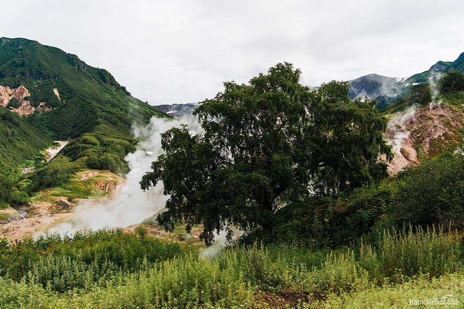
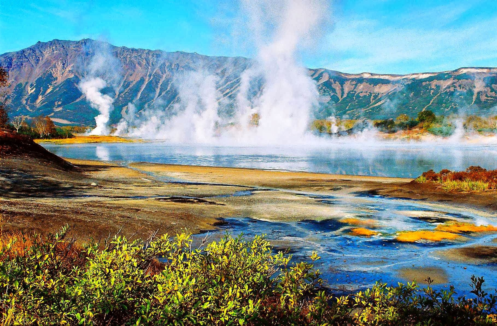
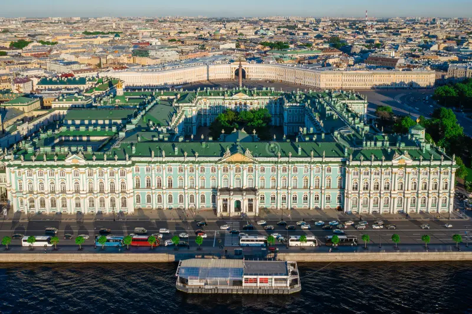
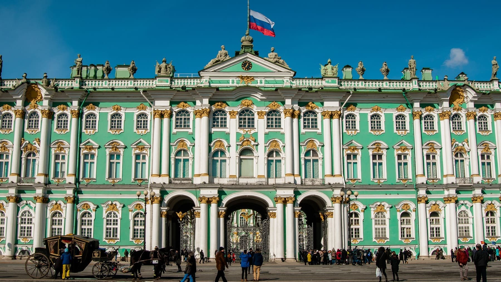
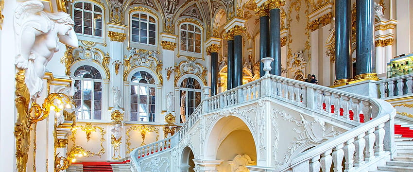
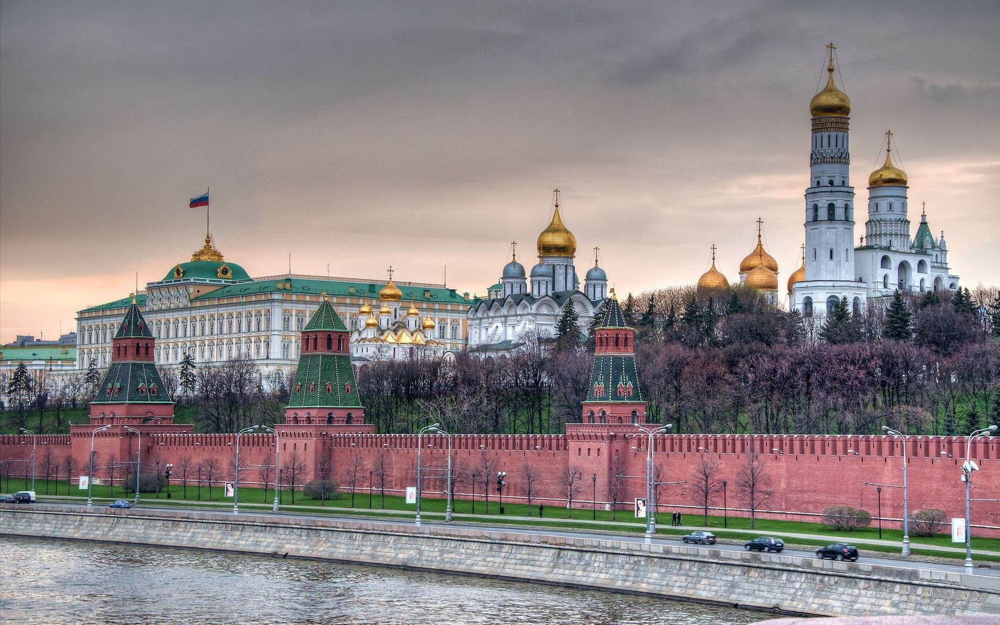
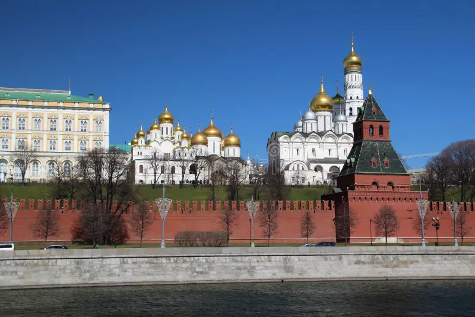
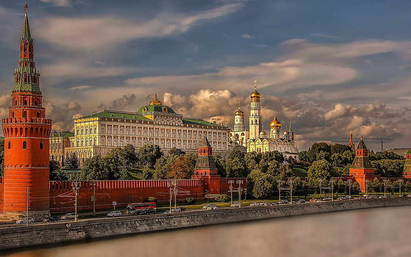
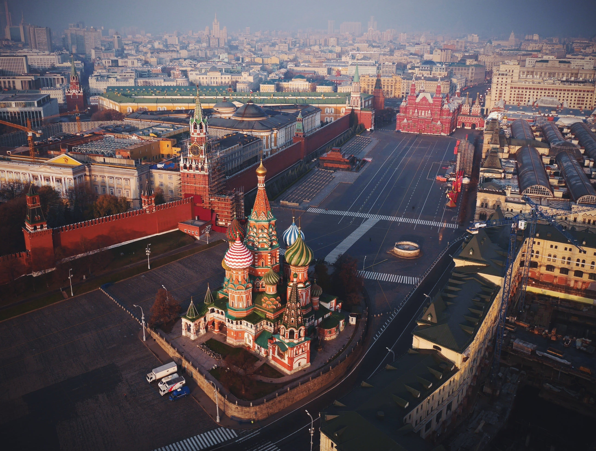
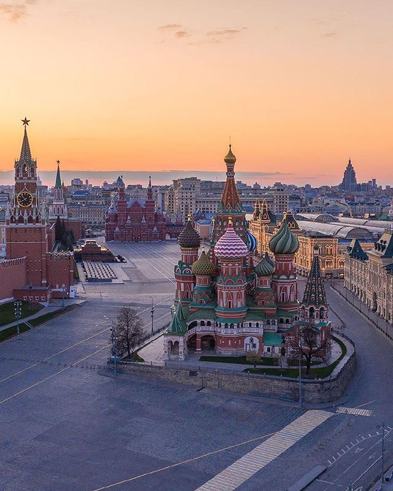

Valley of Geysers

.jpg)

The Valley of Geysers is a geyser field on Kamchatka Peninsula, Russia, and has the second-largest concentration of geysers in the world.
This six-kilometre-long (3.7 mi) basin with approximately ninety geysers and many hot springs is situated on the Kamchatka Peninsula in the Russian Far East,
predominantly on the left bank of the ever-deepening Geysernaya River,
into which geothermal waters flow from a relatively young stratovolcano, Kikhpinych.
Temperatures have been found to be 250 °C (482 °F), 500 m (1,640 ft) below the caldera ground.
Hermitage Museum



The State Hermitage Museum is a museum of art and culture in Saint Petersburg, Russia.
It was founded in 1764 when Empress Catherine the Great acquired a collection of paintings from the Berlin merchant Johann Ernst Gotzkowsky.
The museum celebrates the anniversary of its founding each year on 7 December, Saint Catherine's.
It has been open to the public since 1852.
The Art Newspaper ranked the museum 10th in their list of the most visited art museums, with 2,812,913 visitors in 2022
Kremlin



The Moscow Kremlin or simply the Kremlin is a fortified complex in Moscow, Russia.Located in the centre of the country's capital city,
it is the best known of the kremlins (Russian citadels) and includes five palaces, four cathedrals, and the enclosing Kremlin Wall along with the Kremlin towers.
It is now the official residence of the President of the Russian Federation. The Kremlin overlooks the Moskva River to the south, Saint Basil's Cathedral and Red Square to the east, and Alexander Garden to the west.
St. Basil's Cathedral



The Cathedral of Vasily the Blessed is known in English as Saint Basil's Cathedral,
is an Orthodox church in Red Square of Moscow, and is one of the most popular cultural symbols of Russia.
The building, now a museum, is officially known as the Cathedral of the Intercession of the Most Holy Theotokos on the Moat, or Pokrovsky Cathedral.
It was built from 1555 to 1561 on orders from Ivan the Terrible and commemorates the capture of Kazan and Astrakhan. Its completion, with its colors, was made in 1683.